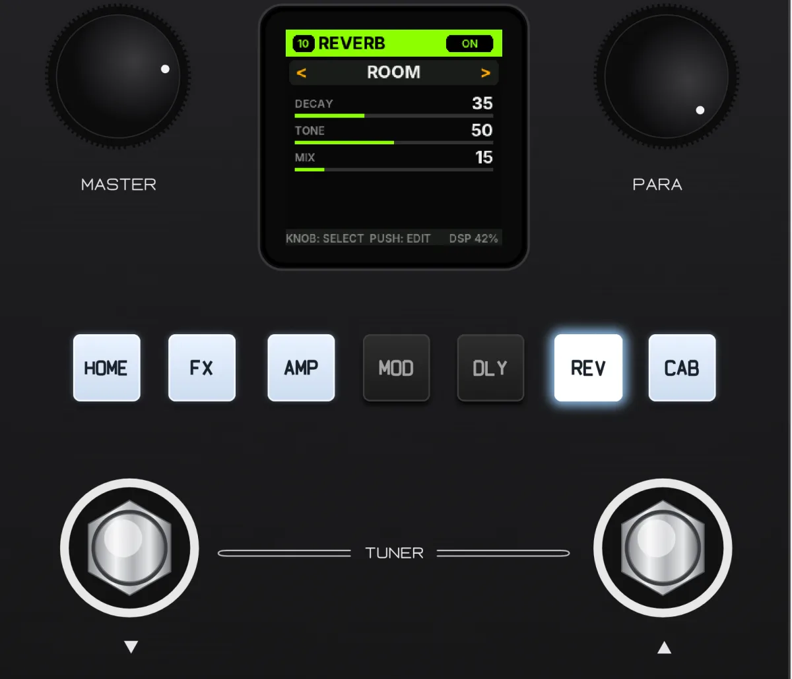
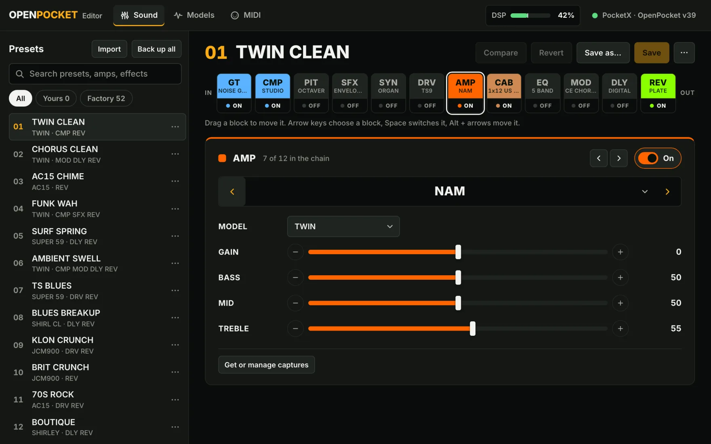
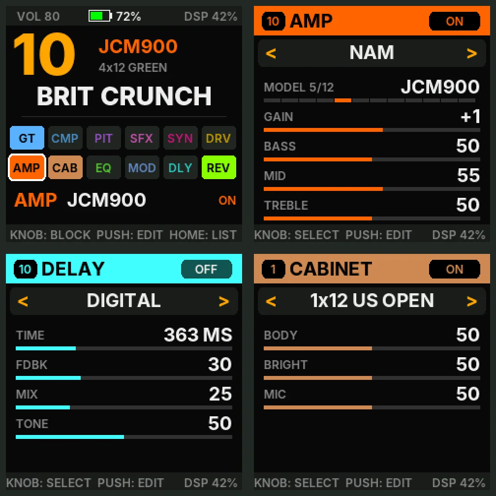
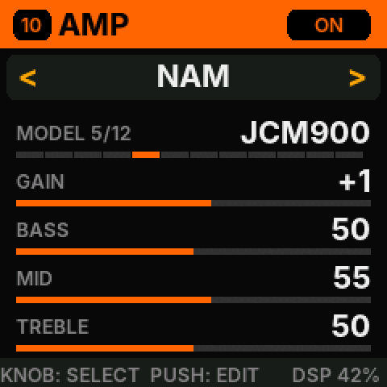
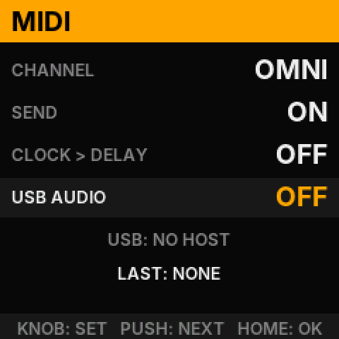
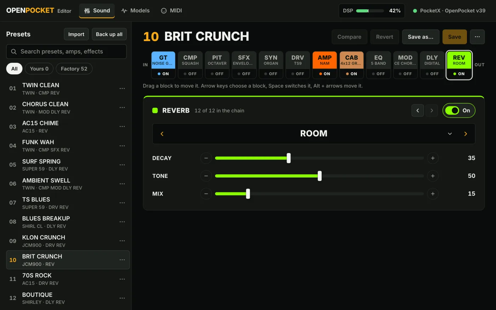
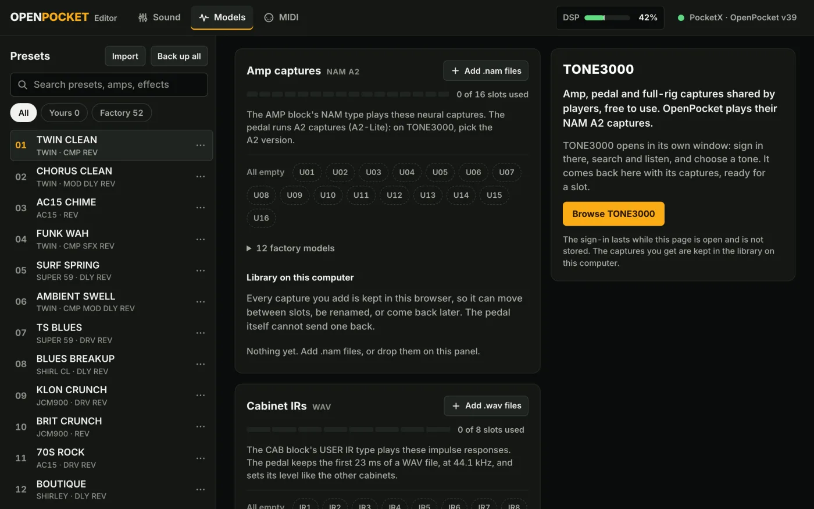
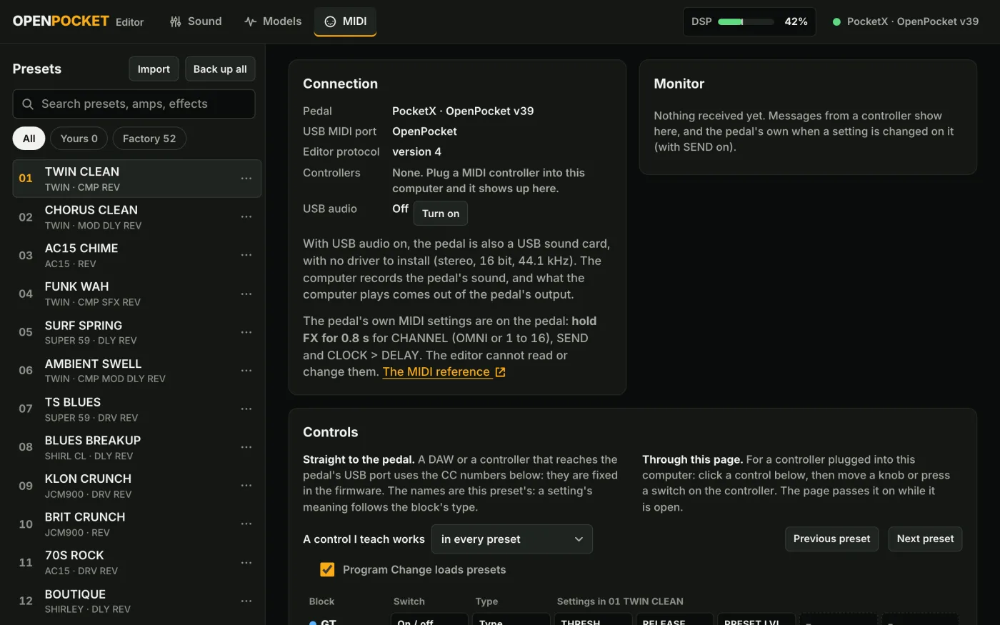
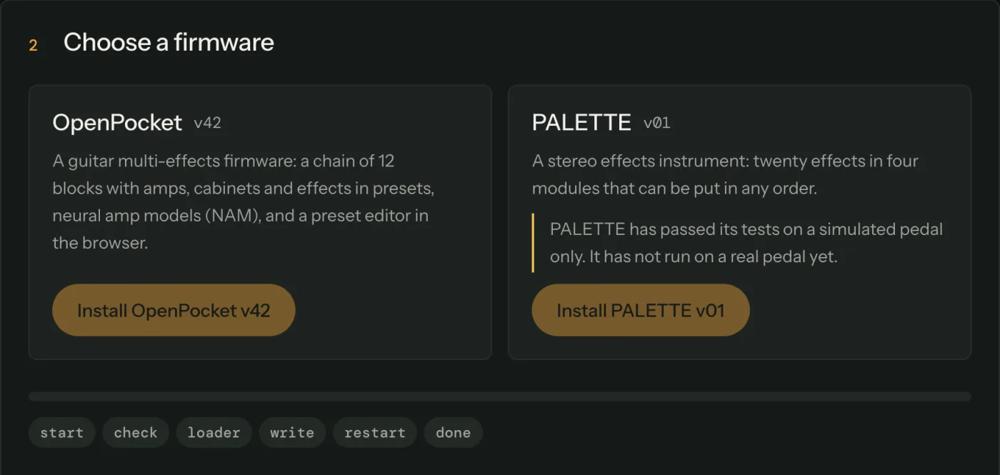
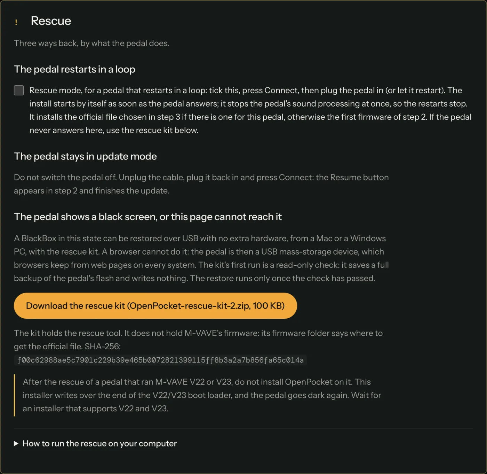

Simulates the pedal on your computer
One command runs the firmware's own screen, presets and sound in a browser, with the installer and editor beside it.

Undertone is a developer kit and two firmwares for the Donner Pocket X and M-VAVE BlackBox: 12 neural amp models at low latency, USB audio and MIDI, installed from Chrome or Edge in about two minutes.

One command runs the firmware's own screen, presets and sound in a browser, with the installer and editor beside it.

The base firmware runs audio, controls, screen, USB and updates. Your app brings its engine and presets.
/* firmware/apps/starter/starter.c */ #define OP_APP_ID "starter" #define OP_NAME "STARTER" #define OP_VERSION_NUM "01" #define A_CH 2 #include "base/audio.h" #include "base/store.h" #include "base/midi.h" #include "app.h"

12 factory A2 models trained for the pedal, and 16 slots you fill with captures from the editor.

With USB AUDIO on, the pedal records and plays at 44.1 kHz beside USB-MIDI. Bluetooth MIDI is a test image.

Every preset, block and model of the OpenPocket firmware, live over USB in Chrome or Edge.
Change any block, type or setting and hear it at once. Compare plays the saved preset beside your changes.
Fill the 16 NAM slots and 8 cabinet IR slots with your files, or find A2 captures on TONE3000.
See the Control Change numbers of the current preset, or learn a control from a MIDI controller.



The installer checks each package against its SHA-256 and the firmware the pedal runs before it sends a byte. The pedal checks it again before it writes.
Connect the pedal with a USB data cable, choose a firmware and press Install. The same page puts the official firmware back.

A BlackBox with a black screen goes back to M-VAVE's firmware over USB, from a Mac or a Windows PC, with no extra hardware.
The kit's first run only reads: it saves a backup of the whole flash and writes nothing. A pedal that restarts in a loop needs only the installer's rescue mode.

Not answered here? The project's issues are open to anyone.
Yes. Pick the official .fwsc file from Donner or M-VAVE in the installer's step 3. Your browser checks it first.
Yes. Each firmware also keeps its own presets while the pedal runs the other one.
Not on one that ever ran M-VAVE V22 or V23: the installer writes over the end of that boot loader.
It passes its tests on a simulated pedal and has not run on a real one yet.
Docker and Node 18 or newer. node tools/op.mjs all builds and tests every firmware in a pinned container.
No. Undertone is an independent GPL-3.0 project. You install it at your own risk.